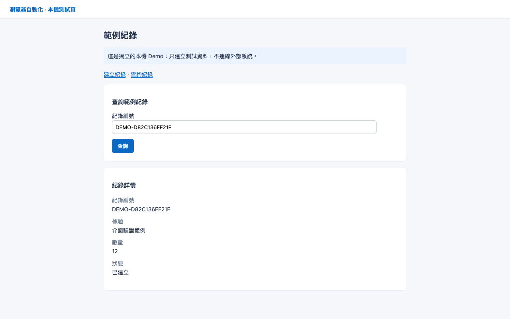

真實本機瀏覽器執行 · 版本 1 · BA-002-4871cabe · 1.848 秒
| 入參驗證 | passed |
| 瀏覽器自動化 | passed |
| 獨立斷言 | passed |
| 出參驗證與發布 | passed |
無異常
{
"recordId": "DEMO-D82C136FF21F"
}{
"recordId": "DEMO-D82C136FF21F",
"title": "介面驗證範例",
"quantity": 12
}
無額外頁面診斷
automation.log · result.json · input.schema.json · input.json · output.json · screenshot.png · output.schema.json · facts.json · assertion.log
自動化 SHA-256：8c3f642b96acbfdeaeb2346ec138f9f91479987f244d506ea2302a8472ce7080
斷言 SHA-256：01c0ede207cc94e863b3a15c3134c81d7d39082de31f937bbc20568e66790607
腳本快照位於 script-snapshot/；出參只在所有檢查通過後發布。